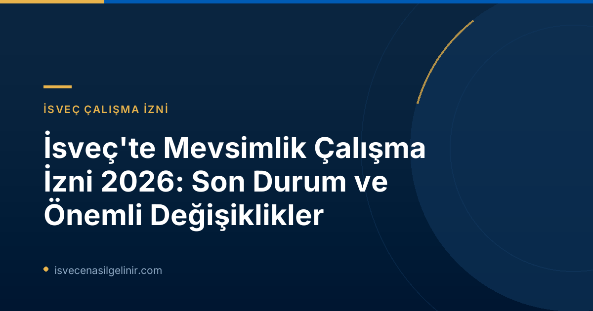

İsveç'te Mevsimlik İşçi Olarak Çalışmak: Sayılar ve Trendler
İsveç ekonomisi için önemli bir yere sahip olan mevsimlik işler, her yıl binlerce uluslararası çalışana ev sahipliği yapıyor. Migrationsverket'in 2026 yılı 10 Temmuz tarihli duyurusuna göre, bu yıl mevsimlik istihdam için toplamda yaklaşık 3.400 çalışma izni başvurusu onaylandı. Ancak, yaklaşık 1.600 başvuru ise çeşitli nedenlerle reddedildi. Her yıl 5.000'e yakın kişinin mevsimlik çalışma için İsveç'e gelmek üzere başvurduğu göz önüne alındığında, bu rakamlar dikkat çekici. Mevsimlik işler genellikle tarım, ormancılık, orman meyveleri toplama, turizm ve hizmet sektörlerinde yoğunlaşmaktadır. Bu işlerin büyük bir çoğunluğu yaz döneminde gerçekleşmektedir. Başvuruların reddedilme nedenleri arasında çeşitli faktörler bulunmaktadır.Başvuru Reddi Nedenleri
- Firma ve İşveren Kaynaklı Nedenler:
- Şirketlerin çalışan istihdam etme konusunda finansal yeterliliğinin bulunmaması.
- Çalışanlara sunulan çalışma koşullarında (maaş, sigorta vb.) eksiklikler veya yasalara aykırılıklar.
- İş ilanlarının AB mevzuatına uygun şekilde doğru ve yeterli süreyle (en az 10 gün hem İsveç'te hem de AB içinde) yayınlanmamış olması.
- Çalışan Kaynaklı Nedenler:
- Başvuranın ülkesine geri dönme niyetini yeterince gösterememesi.
- Duyuruda belirtilmese de, eksik veya hatalı belge sunumu gibi bireysel başvuru hataları da ret nedenleri arasında yer alabilir.
İş Gücü Sömürüsüyle Mücadele: Migrationsverket'in Önceliği
Migrationsverket, mevsimlik iş sektörünün "iş gücü sömürüsü" riski taşıyan sektörler arasında yer aldığını açıkça belirtmektedir. Ormancılık, orman meyvesi toplama ve inşaat gibi bazı sektörler, Cinsiyet Eşitliği Kurumu tarafından bu riskli alanlar olarak işaret edilmiştir. Migrationsverket Seksiyon Şefi Merima Ilijašević, "Mevsimlik sektörlerde yasalara ve düzenlemelere uyan, iyi çalışma koşulları sağlayan birçok şirket var, ancak aynı zamanda düzenli olarak yanlış uygulamalar da tespit ediliyor. Bu yıl da yaşandı ve mevsimlik iş başvurularının reddedilmesine yol açtı" ifadelerini kullandı. İş gücü sömürüsü, İsveç'te bir toplumsal sorun olarak kabul edilmektedir. Migrationsverket, bu sorunu durdurmak için Polis, İsveç İş Çevreleri Kurumu (Arbetsmiljöverket), İsveç Vergi Dairesi (Skatteverket) ve yerel belediyeler dahil olmak üzere diğer devlet kurumlarıyla yakın işbirliği içinde çalışmaktadır. Ilijašević, "Herkes üzerine düşeni yapmalı ve birlikte ne kadar iyi olursak, İsveç iş pazarındaki suiistimalleri o kadar hızlı önleyebiliriz" yorumunda bulundu.İsveç'te Tarım ve Ormancılıkta Mevsimlik İşler ve Özel Durumlar
Orman Meyveleri Toplama İşleri ve Yeni Düzenlemeler
Orman meyveleri toplama sektörü, mevsimlik istihdam ve riskli sektörler arasında öne çıkan bir alandır. Geçtiğimiz yıllarda, bu sektördeki tekrarlayan kötü koşullar nedeniyle Migrationsverket, orman meyve toplayıcılarından gelen başvuruların önemli bir kısmını reddetmiştir. Haziran ayında yürürlüğe giren yeni düzenlemeler, ormanlarda orman meyvesi toplayıcısı olarak çalışmanın, istihdam koşullarından bağımsız olarak artık çalışma izni hakkı vermediğini belirtmektedir. Ancak, Merima Ilijašević, "Orman meyvesi toplama işinde çalışanların çoğu AB'nin mevsimlik istihdam direktifi kapsamında izin başvurusu yapıyor ve bu durum exclusions (dışlamalar) kapsamına girmiyor" açıklamasını yaparak önemli bir ayrımı vurgulamıştır. Bu yıl Migrationsverket, AB mevsimlik istihdam direktifi kapsamında orman meyvesi toplama işi için yaklaşık 1.500 başvuruyu değerlendirmiştir. Bu başvuruların tamamı Tayland vatandaşları tarafından yapılmıştır. Bu başvurulardan yaklaşık 950 tanesi onaylanırken, yaklaşık 600 tanesi reddedilmiştir. Migrationsverket, diğer riskli sektörlerde olduğu gibi, suiistimal göstergeleri ortaya çıktığında bu alandaki denetim ve mücadeleyi sürdürecektir. İsveç'te yaşamak ve çalışmak için genel kurallar hakkında daha fazla bilgi edinmek için sverigemedborgarskapsprov.com adresini ziyaret edebilirsiniz.AB Mevsimlik İstihdam Direktifi Kapsamında Çalışma İzni Şartları
İsveç'e mevsimlik çalışma izni almak isteyen AB dışı vatandaşlar için AB Mevsimlik İstihdam Direktifi kapsamında belirli temel şartlar bulunmaktadır. Bu şartları eksiksiz yerine getirmek, başarılı bir başvuru için hayati öneme sahiptir.| Şart | Açıklama |
|---|---|
| **Maaş ve Çalışma Koşulları** | Sunulan maaş, sigorta ve diğer istihdam koşulları, İsveç'teki toplu iş sözleşmelerinden veya sektör uygulamalarından daha kötü olmamalıdır. |
| **Asgari Ücret** | Maaş, tam zamanlı bir işte alınması gereken en düşük ücrete eşit veya daha yüksek olmalıdır. Bu kural, yarı zamanlı işler için de geçerlidir. |
| **Konaklama ve Sağlık Sigortası** | Çalışanın, izin süresi boyunca uygun standartlarda bir konaklama ve kapsamlı bir sağlık sigortasına sahip olması zorunludur. |
| **İşe Alım Süreci** | İşe alım prosedürü, İsveç'in AB kapsamındaki yükümlülüklerine uygun olmalıdır. Bu, iş ilanının hem İsveç içinde hem de AB ülkelerinde en az 10 gün boyunca yayımlanmasını gerektirir. |
| **Geri Dönme Niyeti** | Çalışanın, mevsimlik izni sona erdikten sonra kendi ülkesine geri dönme niyetini göstermesi gerekmektedir. |
| **AB İkamet Durumu** | Başvuran kişinin, AB içinde ikamet etmiyor olması gerekmektedir. |
Geleceğe Yönelik Bakış: Güvenli ve Adil Bir Çalışma Ortamı
Migrationsverket, iş gücü sömürüsü ve kötüye kullanımlarla mücadeledeki kararlılığını sürdüreceğini vurgulamıştır. Özellikle suiistimal belirtileri tespit edildiğinde denetimler artırılacaktır. İsveç hükümeti ve ilgili kurumlar, mevsimlik iş piyasasında herkes için adil ve güvenli bir çalışma ortamı sağlamak için çalışmalarına devam etmektedir. İsveç'te mevsimlik iş arayan adayların, başvuru süreçlerinde ve işveren seçiminde yukarıda belirtilen şartlara ve Migrationsverket'in duyurularına azami özen göstermeleri gerekmektedir. Herhangi bir şüphe durumunda yasal danışmanlık almak veya Migrationsverket'in resmi kanallarıyla iletişime geçmek büyük önem taşımaktadır.Referans Linkler
İsveç'te Hayallerinizi Gerçekleştirin
İsveç'te mevsimlik çalışma fırsatlarını değerlendirirken haklarınızı öğrenmek ve başvuru süreçlerinizi doğru yönetmek için kapsamlı kaynaklarımıza göz atın. Aklınızdaki tüm sorular için bize ulaşın.